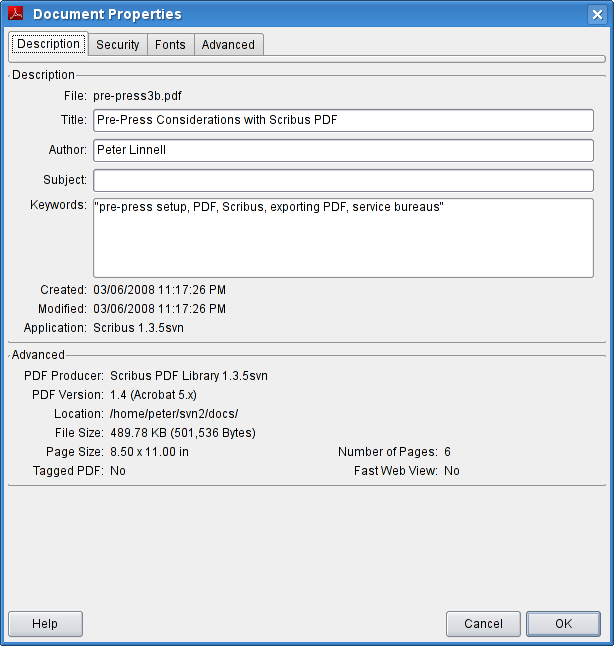

Adobe Reader® 7 is in my experience one of the essential tools to have when using Scribus. Although mostly a simple viewer, it has some advanced features which no other PDF viewer has in the Linux,*nix world: full support for JavaScript with a PDF (You did not know a PDF was scriptable? Scribus is unique in the Linux/*nix world for the ability to create scriptable interactive PDF forms) and detailed information which is embedded in the PDF, but viewable only in Adobe Reader.
Moreover, while PDF is a published standard, Adobe invented PostScript on which PDF is based and has a commercial incentive to promote PDF on all platforms.
We highly recommend upgrading to the latest Adobe Reader 7. Simply put, there is nothing else more capable of rendering PDF correctly. Whatever your objections were to older versions (and there were some substantial ones), this latest version 7 amelorates the vast majority of them. It is far more stable, bug free and now has a modern look and feel. Any PDF rendering issues with Scribus exported PDF in other viewers should be cross-checked with Reader 7 before reporting bugs to us. We are aware of one color mismatch with RGB images and transparency in PDF 1.4. Yes, this has been duly reported as a bug to Adobe too.
Details: As soon there is an extended graphics state parameter dictionary present which contains any transparency related setting, AcroReader switches into CMYK mode showing incorrect colours. My local printer confirmed this strange behaviour even with files not generated by scribus, its clearly a bug from Adobe.
Right away, getting the preferences right in Reader is important to ensure the default preferences to set improve the reliability for our purposes with Scribus. There are a many preferences in Reader 7. The page display part is the most important.
|
This dialog is very important to set up properly for optimized viewing Scribus created PDFs.
Display Edge to Edge will give you a larger viewing area to view your PDF.
Ensure Smooth Text, Smooth Line Art and Smooth Images are enabled as they apply a bit of anti-aliasing when viewing. If you send someone a Scribus created PDF and they complain the text or gradients) look like barbed wire or are "banded", advise the user to enable these settings which are commonly available on all later versions of Acrobat Reader - regardless of platform. There are other cross- platform fonts hints in the PDF Export Options section. Cool Type is a feature specific for making PDF readable on LCD laptop screens. It is a way of adjusting the anti-aliasing and sub-pixel rendering. Otherwise, leave it unchecked.
If you are creating Scribus files with transparency effects and export PDF 1.4 (PDF 1.3 does not support transparency), you can enable Show Transparency Grid.
 |
The other options are mostly for the web browser plug-in. I find splash screens a bother, so I leave that unchecked.
 |
Next, looking at the Reader window above, there are 3 features which can be useful:
|  |
This shows the document size, date of creation and creating application. This information is automatically embedded. Scribus can optionally add author and document title. In addition, this shows Dublin Core RDF (Resource Definition Format) and document security strength.
Document Security. Scribus has the ability to encrypt a document with specific user rights. If you enable Security in the PDF export dialog, when you export PDF 1.3, encryption is 40 bit strength.
 |
If you export a PDF 1.4 file, encryption is 128 bit strength:
 |
Annotations are non-printing notes which Scribus can optionally embed within a PDF. This is really simple. Create a text frame. Then add your notes and right click, select PDF Options and check "Is PDF Annotation".
For other "hidden" features, read through the online help, which is actually a PDF. Beginning with page 10, there are a number of less well known features, including the console command line options. The command line options are specific to Linux/Unix and include some neat options to export PDF into PostScript. There also hints on settings specific to Acrobat Reader in ~/Xdefaults.
Advanced Settings - Fortunately, Adobe enabled a graphical UI choice for enabling/disabling local fonts. Document > Use Local Fonts . What this choice does is enable Acrobat to use locally installed fonts which are named in the PDF, if it can find them in your font path.
I recommend you set this to disable for use with Scribus. Why? As is often the case, PDFs you create in Scribus will be sent to other users who are not running on Linux. What you will want in this case is realistic view without your fonts. Thus, the only reliable way of ensuring your doc will view properly anywhere is to embed the fonts. You can subset them in the font preferences panel to save file size. This particularly important when using the Ghostscript fonts, like the Nimbus family. Acrobat Reader does a poor job of simulating them with its own built-in multi-master fonts.